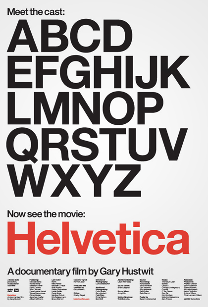

Homework
Type and tweets. That’s what we’ve been on about today. And that’s what your homework will consist of too.

1. Watch “Helvetica” the movie
Find a way to grab a copy of Helvetica, the film. It is, as one might expect, about the typeface Helvetica. Perhaps you’ll stream Helvetica on Netflix. Or maybe you’d rather rent Helvetica on iTunes. But if you just have to own it for yourself you can always purchase Helvetica on Amazon. Helvetica does indeed hold a special place in history, but as you’re watching the film keep in mind that many typefaces have their own tempestuous tales. Don’t get too hung up on Helvetica itself when it comes to choosing typefaces for your own work.
We’ll talk chat about it next class. There’s a lot more in here than just people talking about one font. You’ll hear a lot of valuable (and often conflicting) assertions about graphic design. And you’ll be hearing these things from contemporary leaders in the field, so try to remember at least some of the faces in the film if not their names. You just might run into one on the subway this weekend.
2. Pick a theme and add text
Jumping face first into data-fetching, three-dimensional, WebGL animations is no easy task. But now that you’ve gotten your feet wet let’s start focussing your project. Pick a word or short phrase for your project. This will be your project’s theme, its title, and your query string for Twitter’s API. You may be tempted to spend too much time worrying about what this word or phrase should be. Don’t dwell on it. It’s not the content, but how you package it that counts.
Add text to your globe. Is it the text from the tweets you’ve found? Is it the text from the tweets minus the word or phrase you’ve searched for? How does the way you show us the earth, the drop pins, and the text relate to your project’s theme? (We’ll worry about that more in our next class.)
No need to send me code on Thursday (unless you want to share early). We’ll have a look as a group next Friday. Seriously, don’t feel any pressure to use Helvetica in your work. There are about a million wonderful typefaces out there just waiting to be used.
Postscript (for some of you)
A final reminder, a few of you still haven’t given me two Paper.js animations for the Paper Squares gallery. I’m submitting midterm grades before next class. Rustle up some Paper animations and pass them my way before our next class so I don’t have to fire any warning shots across the bow! And if you have questions about Paper or the assignment in the meantime just drop me an email.